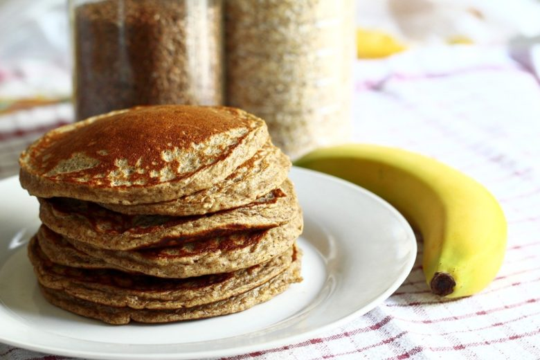

Receita de panqueca simples e saúdavel para seu café da manhã

Ingredientes:
1 banana d’agua madura
1 xícara (chá) de farinha de aveia
1 colher (sopa) de açúcar de coco
1 ovo, de preferência orgânico
1 pote de iogurte natural
1 colher (chá) de fermento em pó
Modo de Preparo:
Em uma tigela, amasse a banana com um garfo e misture os demais ingredientes até obter uma mistura homogênea. Aqueça uma frigideira antiaderente e coloque um pouco da massa com uma concha no centro da frigideira. Deixe dourar e vire para dourar do outro lado. Sirva em seguida. Se desejar, adicione geleia de fruta de sua preferência.
Rendimento: 6 porções
Valor calórico por porção: 92 calorias